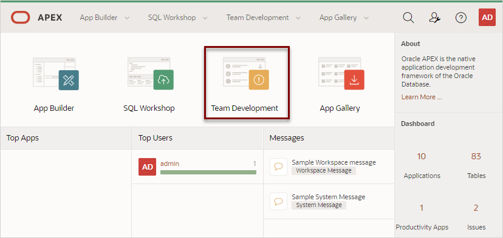
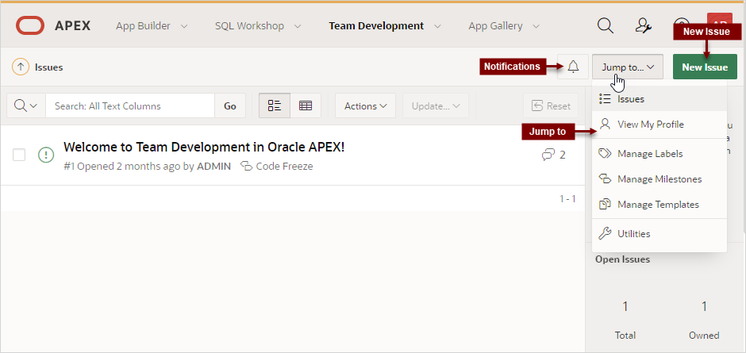

5.1 Getting Started with Team Development
Access Team Development, complete the setup process, and learn about the Team Development toolbar.
- Accessing Team Development
Access Team Development by clicking the Team Development menu, or by clicking the Team Development icon on the Workspace home page. - Setting Up Team Development
Complete the setup process by installing sample labels, sample templates, sample milestones, and selecting a default language. - Team Development Toolbar
Use the toolbar at the top of the most Team Development pages to link to notifications, jump to other pages, or create a new issue.
Parent topic: 管理小组开发
5.1.1 Accessing Team Development
Access Team Development by clicking the Team Development menu, or by clicking the Team Development icon on the Workspace home page.
You can access Team Development in two ways:
-
Click the Team Development menu at the top of most pages in Oracle Application Express.
-
On the Workspace home page, click the Team Development icon.

Description of the illustration access_team_development.pngThe Issues page appears.
See Also:
Parent topic: 小组开发入门
5.1.2 Setting Up Team Development
Complete the setup process by installing sample labels, sample templates, sample milestones, and selecting a default language.
When you access Team Development for the first time in a new workspace, a welcome screen appears. Oracle recommends you follow the on-screen instructions and completing the setup process.
To setup Team Development:
Parent topic: 小组开发入门
5.1.3 Team Development Toolbar
Use the toolbar at the top of the most Team Development pages to link to notifications, jump to other pages, or create a new issue.
Team Development Toolbar
Description of the illustration team_dev_toolbar.png
The Team Development toolbar contains the following controls:
-
Notifications - Links the Notifications page where you can view or clear notifications for all issues which you own or are monitoring. See "Viewing Your Notifications."
-
Jump to... - Access other Team Development pages. Available links include:
-
Issues - Links to the Issues page. See "Issues Page."
-
View My Profile - Links to the User Profile page where you can view a report of all issues your own or are monitoring. See "Viewing Your Issues."
-
Manage Labels - Links to the Labels page. Use labels and label groups to classify issues. See "Managing Labels."
-
Manage Milestones - Links to the Milestones page. Create milestones to track events. See "Managing Milestones."
-
Manage Templates - Links to the Templates page. Templates provide starter text for issues and issue comments. See "Managing Templates."
-
Utilities - Links to the Team Development Utilities page. See "Using Team Development Utilities."
-
Parent topic: 小组开发入门